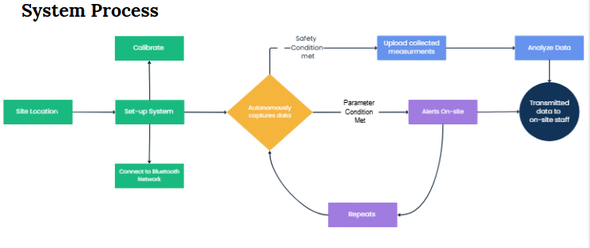
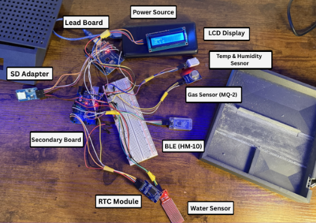
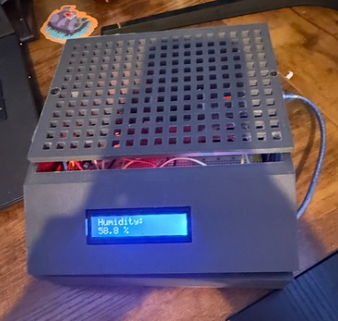

Tools: Arduino IDE · SolidWorks · Data Analysis · Python · Web Development
This project is a dual-Arduino prototype designed to monitor temperature, humidity, gas concentration, and water presence for early wildfire detection. It functions as a low-cost IoT device for on-site logging and Bluetooth transmission for real-time monitoring.

I designed a compact enclosure in SolidWorks with room for component clearance, then built the system around a two-microcontroller configuration, with each board handling a different set of hardware components that communicated with each other through TX and RX protocols. Using the Arduino IDE, I calibrated the sensor readings, communication paths, and datalogging. Finally, I 3D printed the enclosure, then soldered and housed the electrical system inside it.

The prototype achieved data collection across all sensors with synchronized time logging and established a 40-meter Bluetooth range with consistent communication. It enabled tracking and analysis of the transmitted data to identify environmental trends and early hazard indicators, all while keeping the total prototype cost under $50.
